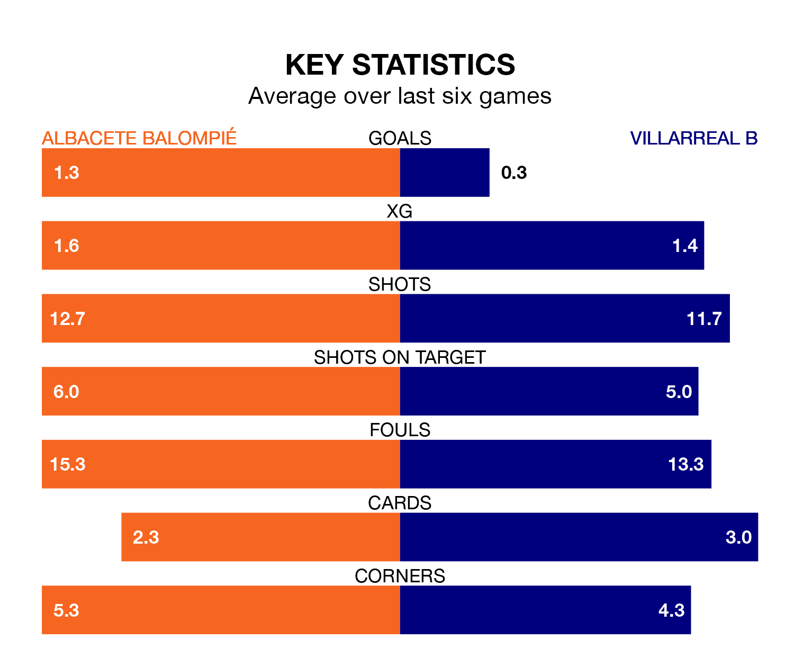

Villarreal B travel to Albacete Balompié on late Friday in the Segunda División.
The visitors come into the game on the back of a win in their last match, having beaten SD Eibar 1-0 at home, with a goal from Álex Forés Mendoza.
Albacete Balompié, meanwhile, lost their last match, 5-4 against Racing Club de Ferrol, with their goals scored by Daniel Escriche Romero, Lander Olaetxea Ibaibarriaga and Manuel Fuster Lázaro.
Villarreal B are 18th in the table after 18 games, of which they have won five and drawn five, earning 20 points.
Albacete are one place ahead of the visitors in 17th, with five wins and six draws putting them on 21 points.
With 22 goals in 18 games so far this season, Albacete Balompié are scoring at the league's average rate with 1.2 goals per game. And they are conceding more than average, letting in 28 goals at a rate of 1.6 per game.
Villarreal B are also average scorers, with 1.2 goals per game. They have conceded 1.5 goals per game.
In the last five years, Albacete and Villarreal B have played each other on four occasions. Albacete won two of them, Villarreal B one, and they drew once.
On average, Albacete Balompié scored 0.8 goals and Villarreal B 1.0 in those matches.
Their last meeting was on April 22, when Albacete won 2-1 away.
In Forés Mendoza, Villarreal B have one of the league's sharpest shooters so far this season. He has notched seven goals in 18 appearances, to sit seventh in the scoring charts.
The home side's top scorers, with four goals in 18 games each, are Alberto Quiles Piosa and Fuster Lázaro.
Albacete are in mixed form in the Segunda División, with one win and four draws from their last six games.
With two wins and a draw over that period, the away team's form is similar – they have both taken seven points from 18.
